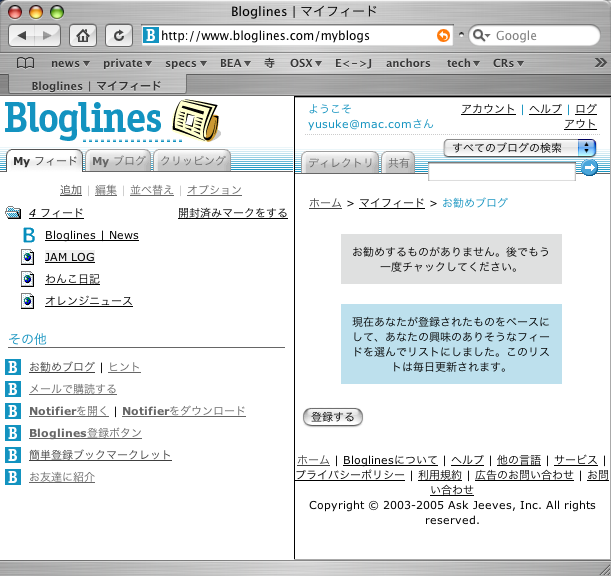

« 2005年01月 | メイン | 2005年03月 »
2005年02月27日
Blue Man Group
を観た。
Blue Man Group はラス・ベガスの派手なホテルの中でもひときわ異様な雰囲気を放つピラミッド型のホテル、Luxor で行われているショー。
別の言い方をすれば数年前、そしてまた最近やってたインテルのコマーシャルに出ている無言で真っ青な人たちのショー。
http://www.intel.com/intel/promotions/unwire/ads.htm
てっきりコマーシャルだけのキャラクターかと思えばしっかりと腰を据えてやっている人たちらしい。
http://www.blueman.com/
ショーの内容は、なんともジャンルをつけがたいもの。CMでも披露していたプラスチックの下水管（？）を使ったパーカッションライブをしたり、照明や電光掲示板を効果的に使ってちょっとした目の錯覚で楽しませてくれたりと何が起こるか予測も付かない不思議なもの。
日本ではあんまり有名じゃないかもしれないけど結構お勧め。
http://www.blueman.com/videoimages/video/ifeellove_h.shtml

リーダーとパシャリ
投稿者 yusuke : 23:13 | コメント (0) | トラックバック
seafood buffe
今日はストリップからちょっと離れたところにある全室がスイートという豪華ホテル、Rioでシーフード。
いまだかつてないほどカニを食べまくった。
カキはイマイチ。

結局４皿くらいたべたカニ。ゲフッ
投稿者 yusuke : 23:07 | コメント (0) | トラックバック
え！？チケット手配してくれるんですか？しかもタダ？
ラスベガスで一番人気のあるショーはなんといってもCirque de SoleilのO(オー)。
Oはフランス語のeau(水)をもじっていて、巨大なプール？の上でなんとも壮大なショーをやってくれるらしい。
http://www.bellagio.com/pages/ent_main.asp
人気のショーだけあって、前日に確認したら完売状態。
ホテルのフロントなら別口でチケットがとれるんじゃないかと甘く見ていたが、やはり売り切れでとれないとのこと。
そんなこんなで今回Oはあきらめていたんだけれどもひょんな事からチャンスが舞い込んできた。
今日はちょっと妻と別行動をして一人で歩いていた・・・ところ、
おっさん:「今何時？」
白人の４，５０くらいのおっさんが話しかけてきた。
自分:「ん？えーと、２時っす」
おっさん:自分の腕時計を見て、うん、とうなずく。
え、時計もってるじゃん・・・・。あ、そうか、この国はタイムゾーンがいくつかあるから時計をもっていても時間を聞くことがあるのか。
おっさん：「どこから来たん？」
自分：「日本から」
おっさん：「おー日本！俺もちょうど１週間後に日本に行くんだよ！」
おっさんによると妻がハワイ出身の日系２世だとのこと。東京、名古屋、大阪と１ヶ月かけて旅行するらしい。優雅なもんだ。
仕事はスロットマシンのエンジニアで、偶然にも我々が泊まっているニューヨークニューヨークホテルでスーパーバイザーをしている、とか言う。
スロットマシンのエンジニア・・・・さすがラスベガスだ。
成り行きでOのチケットがとれなかったことを話すと、そんなの余裕、俺が手配してやる、と。
自分：「いや、でも売り切れだってよ」
おっさん：「こういうのは各ホテルで身内のゲスト用に余分のチケットがあんだよ。」
あーなるほど。そりゃそうだね。早速おっさんが電話をかける
おっさん：「オー、俺だ、アレックスだ。ちょっと頼みがあるんだけど、Oのチケット手配してくれないかな・・・・うん、今日の・・・PM10:30〜のチケットしかない？」
自分：「あ、遅めの方がいいっす。むしろ。 早めの時間だと Blue Man Group のショーがかぶるんで」
おっさん：「あ、遅めので大丈夫だって。・・・・・名前は・・」
自分：「YUSUKE」
おっさん：「YUSUKEだ、・・・んん、あぁ、まぁ俺の友達みたいなもん(kind of my old friend)だよ。えと、ファーストネームはァ・・・？」
自分：「いや、ファーストネームがYUSUKEで、ファミリーネームはYAMAMOTO」
おっさん：「で、YAMAMOTO」
おぃ、ファーストネームYAMAMOTOになってないか？まぁいいか・・・。
おっさん：「よし、とれたぞ。ほんじゃチケットとりにいこうか」
自分：「まじっすかー！悪いなーどうお礼して良いのやら・・・」
おっさん：「いいってことよ、そのかわり旅行に備えて日本のおいしいレストラン教えてくれ」
自分：「あーオケ、オケ。いくらでも教えてあげるよ。」
なんかいやにウマすぎる話だけれども特に妙な要求されたり、カード番号をいきなりきかれたりしたわけではないので様子を見ながらホイホイついていくことに。
というわけで作戦会議にマクドナルドへ。（おっさん仕事はいいのか？）
適当にレストランの名前、場所、地図とかでっちあげてあげた。
おっさん：「悪いな。お、そうだ、礼と言っちゃなんだがいいスロットの台教えてやるよ」
なるほど、パチンコみたいに出やすい台、出にくい台とかあるんだー。
しっかしちょっと怪しいけど・・・おっさんが特別儲ける、自分が損する話じゃないから今のとこ大丈夫そうかな・・・。
自分：「え、マジで？」
おっさん：「あぁ、でも当たったらすぐにやめろ。ジャックポットが当たる台なんてさすがにわからないから、たいした儲けにはならないはず。続けてやってもすぐ損する。あと、出なくても文句言うなよ？絶対に出る事なんて保証できないから。」
自分：「あぁ、もちろん。もともとそんなギャンブルしに来てる訳じゃないし。・・・でも引くまでにどれくらい投資することになるの？」
おっさん：「ちょっとまて・・・えーと」
といってなにやら設定が載っているマトリックスみたいなのとにらめっこしながらメモ帳で計算をする。
おっさん：「$5betする台で、毎回3つbetしながら３３回リールを回せ。それででなかったらあきらめろ」
自分：「$5x3x33 =・・・・・えーっと、大金だね・・・・・（汗）。無理無理。」
おっさん：「バカ、でも当たれば$5000くらい出るぞ。今の設定なら」
おっさん：「よし、それじゃ俺が掛け金半分貸してやる。当たったら俺の貸した分は返してくれればいいから、残りは全部くれてやるぞ。いい話だろ。よし、足りない分だせ。」
え？？？今？？？？あなたに？？？？？？？出すんですか？？？？？？
ちょっと気づくの遅かった。おっさん詐欺師でした。
遠慮してそそくさと退散。
結局Oのチケットも手に入らなかった（たぶんその話もでっち上げだと思う）けれども２時間ほどにわたる英会話と、初めての詐欺師との触れ合いということでむしろ有意義だった。
旅先でウマい話にホイホイ乗るのは危険、なのは重々承知している。
けれども、ちょっとくらいのトラブルは金を出してでも・・・とまでは言わないけれどもいい経験になる。
一応以下のことを常に気をつけながらおっさんの対応をしていた。
・人気（ひとけ）のないところへついて行かない
->着ぐるみはがされるかもしれない
・ウマい話に対して相手、自分がそれぞれどんな得、損をする可能性があるのか
->一見ウマい話も結局損することになるかもしれない。パスポート、クレジットカード、現金、住所、電話番号といった順で渡してはいけない。
・話に矛盾がないか
->相手はプロだからなかなか見抜くのは難しい
今回の場合は現金をその場で渡すよう要求するなんてあんまりなオチだった。
それに「出やすい台」はもしかしたらあるかもしれないけれども、どういったタイミングでいくら賭ければ、いくら当たる、みたいな情報を従業員がわかるはずない。
十分にブラックボックスになるよう州法かなんかで定められているはず。合法的な賭博上なのに身内の情報で儲ける方法があるわけないでしょう。
投稿者 yusuke : 21:37 | コメント (0) | トラックバック
2005年02月26日
サーカス・サーカス〜マンマミーア
リビエラを後にして次に行ったのはサーカス・サーカスというホテル。リビエラの目の前にある文字通りサーカスをテーマにしたホテル。
欧米のちょっとレトロな移動サーカス/遊園地にあるようなゲームがあり、ダークマンでリーアム・ニーソンが遊園地でマジギレするあの最高のシーンを思い出した。
「線はまたいでねーーよーーーーーーーー！」
ここは３０分置きに簡単なサーカスショーが観られたり、アドベンチャードームという巨大な屋内遊園地があったりと子供と来るにもよさげな場所。21歳未満はカジノで遊べないので実際家族連れはみんなここに一度は立ち寄るのではないだろうか。かなり混雑している。
サーカス・サーカスの後は妻のリクエストで予約しておいたマンダレイ・ベイホテルのミュージカル。劇団四季もやってる（やってた？）マンマ・ミーアというやつ。
舞台は簡素なリゾートホテル。オーナーでもある母親に女手ひとつで育てられたソフィーという娘が主人公。
父親がどんな人であるかどうか、また父親の消息についてなど聞かされておらず父親に会いたい一心ちから母の古い日記を盗み見てしまう。実は明日はソフィーの結婚式で、父親候補と考えられる３人を勝手に招待したことからドタバタが始まる、というような話。
ミュージカルは、以前家族旅行でニューヨークにてcatsを観たけれどもストーリーを全く理解できていなかった。
今回は50〜60%くらい理解できたかな？まだまだ精進、精進。
ABBAの曲がメインで会場全体ノリノリ。最高だった。
http://www.mamma-mia.com/
夜はシーフードレストランでロブスターを食べようと試みるも１時間半待ちということで遠慮しておく。ごてごてと味付けされたホットドッグとチーズがたっぷりのったフレンチフライを食して満腹。軽くスロットで$3ほど遊んで部屋へ戻る。

チーズコテコテのチリドッグ
シャワーを浴びていると誰だか部屋を尋ねてきた。ホテルの方で、階下で水漏れしているけどバスタブから水を溢れさせたりしていないかと聞かれる。
水を張って浸かっていたものの溢れさせてはいない。一応確認してもらい、帰って頂いた。修理のために部屋の移動/アップグレードなどをオファーしてくれないかと淡い期待を抱くもそんなウマイ話はなく消灯。
投稿者 yusuke : 22:43 | コメント (2) | トラックバック
ラスベガス着〜Vegas Shoot見学

今回泊まったNew York-New York Hotel&Casino;
ラスベガスに着いたらまずはストリップの各テーマホテルをざっと散策。前回の旅行で一通り見ているけれどもたぶんこれは何度来ても楽しいもの。

ハーレーをテーマにしたカフェ
日本では考えられない規模にやはり驚かされる。散歩の目的地はリビエラホテル。6km以上に及ぶストリップを南から北までほぼ縦断したことになる。

サンフランシスコ名物Ghirardelliのパフェをなぜかラスベガスで食す
リビエラは最近流行のテーマホテルと違って結構老舗のホテルでこれといった見所があるわけじゃない。今日ここにきたのはベガス・シュートというアーチェリー大会をやっているから。
ホテルのコンベンションセンターを貸し切ってかなり大規模な試合を行っていて感銘をうける。
日本でも晴海の倉庫や東京ビッグサイトを借りてやっていた東京インドアオープンも近年（阪神大震災以降）はちょっと下火で駒沢の体育館止まり。昨年のオリンピック熱の続きで今年は盛り上がると良いんだけれども・・・。
試合会場ではメーカーの直販ブースもいろいろと出店されていて大変活気がある。この国はどんなスポーツでもそれなりの市場規模があるもんだと関心、感心。
試合会場では日本のプロショップでいつもお世話になっている方にお会いした。来ているのは知っていたので偶然ではないんだけれども、遠く離れた土地で知り合いに合うのはうれしいものだ。
せっかくだからそのうち手を付けるだろうコンパウンドボウ用のリリーサーを調達してしまおうと思い立ち、無難なモデルを教えて貰い購入することに。
旅先はちょっとサイフの紐が緩い。

会場の一つをパノラマで
投稿者 yusuke : 20:43 | コメント (0) | トラックバック
H2Aロケット
の打ち上げを楽しみにしていたのだけれども、若干異常が見つかったとのこと。
種子島は夕方かもしれないけどサンフランシスコはもう夜です。眠い、まてない。お休みなさい。
投稿者 yusuke : 00:32 | コメント (0) | トラックバック
2005年02月25日
WebLogic Server + MacOSX = ∞
随分前にいれたんだけどインストールメモ
まずはここを参考にインストール。
run WebLogic Server 8.1 on Mac OS X (Panther)
注!!!
WebLogic Server は一部分をのぞきJavaでかかれた製品なので大抵のJVMの上で稼働しますがサポートされるのは結構ｷﾋﾞｼｲ試験を耐え抜いたと考えるのが妥当な限られたプラットフォームのみです。
現在のところ MacOSX でのサポートはアナウンスされていません。インストール、起動する事自体問題はありませんがあくまで自分の責任に置いて行う必要があります。
ピクりとも予断を許さない商用環境で利用するにはドキュメントを良く確認してサポート対象のプラットフォームを利用するのが無難です。
・WebLogic Platform Supported Configurations
http://e-docs.bea.com/platform/suppconfigs/index.html
・WebLogic Platform サポート対象のコンフィグレーション
→翻訳の関係上英語版より若干遅れて更新されるので確実を期すには英語版を確認するのがお勧め
http://edocs.beasys.co.jp/e-docs/platform/suppconfigs/index.html
・限定非商用ライセンスの有効化
license_scale_limited.bea を license.bea にリネームするだけ
$ mv license.bea license.bea.dev
$ mv license_scale_limited.bea license.bea
・ネイティブIOの有効化
ネイティブIO はその名の通り JNI を使ってかかれた IO を行うライブラリ。java.net.* や java.nio.* などより高速なネットワークパフォーマンスを発揮してくれる。
http://www.beasys.co.jp/e-docs/wls/docs81/perform/WLSTuning.html#1142800
ライブラリをコピーする
$ cd /bea81sp4/weblogic81/server/lib
$ mkdir mac
$ cp wls4mac/lib/* ./mac/
$ cd mac
$ chmod +x *
commEnv.sh 215 行目よりに以下を追加してライブラリのパスを通す
--------
Darwin)
if [ -n "${DYLD_LIBRARY_PATH}" ]; then
DYLD_LIBRARY_PATH=${DYLD_LIBRARY_PATH}:${WL_HOME}/server/lib/mac
else
DYLD_LIBRARY_PATH=${WL_HOME}/server/lib/mac
fi
export DYLD_LIBRARY_PATH
;;
--------
スレッドダンプをとって NaitiveIO が有効になっていることを確認。
"ExecuteThread: '1' for queue: 'weblogic.socket.Muxer'" daemon prio=5 tid=0x00581090 nid=0x1f21200 waiting for monitor entry [f18a1000..f18a1b20]
at weblogic.socket.PosixSocketMuxer.processSockets(PosixSocketMuxer.java:93)
- waiting to lock <0x67e2d530> (a java.lang.String)
at weblogic.socket.SocketReaderRequest.execute(SocketReaderRequest.java:32)
at weblogic.kernel.ExecuteThread.execute(ExecuteThread.java:219)
at weblogic.kernel.ExecuteThread.run(ExecuteThread.java:178)
->weblogic.socket.Muxer って実行キューができている。
・なんとなくチューニング
-実行スレッド数
そんなに過負荷になる（なっては困る）所詮自宅サーバなので実行スレッド数は少なめに。scale_limited ライセンスなのできっとデフォルトの25あっても使い切れないでしょう。
サーバ -> コンフィグレーション -> 一般 -> 実行スレッドの設定-> スレッド数 ->15
-Apache プラグインを介してもクライアントの IP アドレスを正常にうけとれるように
サーバ -> コンフィグレーション -> 一般 -> WebLogic Pluginを有効化 [on]
・OSスタートアップ時の WLS 起動
マシン起動時に WLS も起動するように設定。
/Library/StartupItems/ 以下にディレクトリを掘る
# cd /Library/StartupItems/
# mkdir WebLogic
MacOSX 独自の起動スクリプトを書く
# cd /Library/StartupItems/WebLogic
# vi WebLogic
------------------こんな感じ
#!/bin/sh
##
# WebLogic
##
. /etc/rc.common
StartService ()
{
ConsoleMessage "Starting WebLogic"
cd /bea81sp4/user_projects/domains/mydomain/
sudo -u yusukey ./startWebLogic.sh > admin.out 2>&1 &
}
StopService ()
{
ConsoleMessage "Stopping WebLogic"
cd /bea81sp4/user_projects/domains/mydomain/
sudo -u yusukey ./stopWebLogic.sh weblogic weblogic
}
RestartService ()
{
ConsoleMessage "Restarting WebLogic"
cd /bea81sp4/user_projects/domains/mydomain/
sudo -u yusukey ./stopWebLogic.sh weblogic weblogic
sudo -u yusukey ./startWebLogic.sh > admin.out 2>&1 &
}
RunService "$1"
------------------こんな感じ↑
# vi StartupParameters.plist
------------------こんな感じ
{
Description = "WebLogic";
Provides = ("Application Server");
Requires = ("");
Uses = ("Disks");
OrderPreference = "None";
}
------------------こんな感じ↑
WebLogic/StartupParameters.plist の２つのファイルをみて勝手に起動してくれる。
Windows の net start にあたるコマンドは
# SystemStarter start|stop|restart "スタートアップアイテム名"
・最近日本語化されたセキュリティーアドバイザリを見て危ないところを設定
-BEA04-73.00 - Documentation is available to configure the server for encryption of administrative data.
サーバ間通信を sniff されるとパスワードなどが漏れる可能性があるという脆弱性。管理サーバと管理対象サーバは同じサーバ上にあるので無視。
第一ファイアウォール内のパケットを盗み見されてしまう状況だったらもう終わってるでしょう・・・。
管理ポートを設定してサーバ間通信を SSL にしろ、とのこと。
weblogic.Admin とか SSL 使わないで実行するひとはめちゃめちゃ多いと思うので気にしない人も多いのでは？
個人情報とかたくさん管理しているような内部犯にもセンシティブな環境では気をつける必要があるでしょう。
-BEA04-70.00 - Patches are available to protect Server version information
レスポンスヘッダにサーバのバージョンがデフォルトで含まれるという話。直接脆弱性にはならないけどもバージョン特有の脆弱性がみつかった場合に攻撃対象となりやすい。
パッチがでているけども、ヘッダを送るかどうかのデフォルト値が変わるだけ。
手動で設定することとする。
Protcols > HTTP > Advanced Options > Send Server Header [off]
褒められた設定じゃないけれども管理対象サーバはいまのとこたてないので一応管理コンソールは off。
手前の Apache からプロキシしなければ関係ないけれども。
投稿者 yusuke : 22:27 | コメント (1) | トラックバック
PostgreSQLのバックアップ
PowerBook2400の古いサーバにあるPostgreSQLのデータをバックアップ、のメモ
# su - postgres
$ pg_ctl -w start
waiting for postmaster to start...FATAL 2: control file context is broken
/usr/local/pgsql/bin/postmaster: Startup proc 1206 exited with status 512 - abort
あれ、postmaster を起動できない。以前停電になったときに壊れてしまったのだろうか。
調べてみると pg_control ってファイルにあり得ない値が記録されていると発生するとのこと。前回シャットダウンしたときにシステムクロックがおかしな値になっていないか？と。確かに時計用の電池はもう切れてるので時々時間が狂ってる。
確認してみるとタイムスタンプは 1904 年に。
cd /usr/local/pgsql/data/global
$ ls -la pg_control
-rw------- 1 postgres postgres 8192 Jan 1 1904 pg_control
http://www.mail-archive.com/pgsql-admin@postgresql.org/msg05176.html
src/backend/access/transam/xlog.c でチェックしている箇所をコメントアウトすれば復活できるかも、とのこと。C言語なんて読みたくないけれどもしかたない。
なんとなくここっぽい。
------
if (ControlFile->logSeg == 0 ||
ControlFile->time <= 0 ||
ControlFile->state < DB_SHUTDOWNED ||
ControlFile->state > DB_IN_PRODUCTION ||
!XRecOffIsValid(ControlFile->checkPoint.xrecoff))
elog(STOP, "control file context is broken");
------
"ControlFile->time <= 0 ||" の部分をコメントアウト、data フォルダをバックアップして再インストールしてみた
$ ./configure --enable-multibyte=EUC_JP
$ make
$ make check
====================================================
2 of 76 tests failed, 1 of these failures ignored.
====================================================
なんかテストが失敗してるけど無視。もうこの環境で運用する訳じゃないし。
$ make install
$ pg_ctl -w start
$ pg_ctl -w start
waiting for postmaster to start....DEBUG: database system was interrupted at 1904-01-01 00:05:22 CJT
DEBUG: CheckPoint record at (0, 18009432)
DEBUG: Redo record at (0, 18009432); Undo record at (0, 0); Shutdown TRUE
DEBUG: NextTransactionId: 72060; NextOid: 77273
DEBUG: database system was not properly shut down; automatic recovery in progress...
DEBUG: ReadRecord: record with zero len at (0, 18009496)
DEBUG: redo is not required
The Data Base System is starting up
.The Data Base System is starting up
.INSERT @ 0/18009496: prev 0/18009432; xprev 0/0; xid 0: XLOG - checkpoint: redo 0/18009496; undo 0/0; sui 75; xid 72060; oid 77273; shutdown
XLogFlush: rqst 0/18009560; wrt 0/18009496; flsh 0/18009496
DEBUG: database system is in production state
done
postmaster successfully started
無理矢理起動成功！
$ pg_dump ${バックアップデータベース名} > backup.dump
投稿者 yusuke : 22:15 | コメント (0) | トラックバック
フィットネス
今日は3.4マイルを34分かけてラン。
だいぶ楽になってきたけれどもちょっと気がゆるむと無意識に手が動いてスピードを落としてしまいそうになる。息はそんなにあがっていないんだけども・・・いかんいかん。
ランのあとは腕立て伏せ、腹筋、ハム２ラウンド。
投稿者 yusuke : 22:09 | コメント (0) | トラックバック
ベガスへ！
今週末はラスベガスへ妻と小旅行。
ラスベガスは今回で二度目になる。前回行ったのは二年半前で、一人旅だった（！）。
こんなクレイジーな町は独りよりも盛り上がるだろうと期待。
飛行機、ホテルの予約はオンラインで。
飛行機は妻の薦めでまず www.yahoo.com を確認。どの航空会社でも値段はほとんど同じだけれどもサイトによって手数料が異なる可能性はあるだろうといくつかのサイトを確認してみた。
３つ位比較したところ結局のところ yahoo が $10 で一番安かった。
ホテルはディスカウントホテル予約サイトみたいのを確認したけれどもホテルの本家サイトが一番安かった。
#予約したのは New York New York
投稿者 yusuke : 20:27 | コメント (0) | トラックバック
WebLogic Platform on 自宅サーバその２
まじめに自宅サーバで WebLogic Server を使いたくなったのでライセンスについて調べてみた。
ドキュメントを見る限り非商用で使うぶんには大丈夫なはずだけれども、いまいちはっきりしないので。
結果からいえば Ok。
WebLogic Workshop の Product Manager というタイトルで自宅サーバでの利用については go サインがでてる。
・Professional edition と Free Edition について
http://theserverside.com/common/printthread.tss?thread_id=24651#115012
----
The $1000 Professional edition lets you use key this for anything you want, including commerial applications, and includes 1 year of dev support. The Free Edition enables you to deploy the scale-limited server for non-commercial or accademic purposes, such as a private blog server, an app for a non-profit, or teaching a class, and doesn't include support.
----
Professional Edition($1,000)
・商用アプリケーションに使える
・１年間の開発サポートつき
・パフォーマンスが制限されている(同時３ソケット接続まで)
・開発ライセンスみたいに接続するクライアントのIPアドレス数に制限はない
Free Edition
・非商用、または学術目的 - 個人的な blog サーバ、非営利目的、教育目的利用向け
・サポートなし
・パフォーマンスが制限されている(同時３ソケット接続まで)
・開発ライセンスみたいに接続するクライアントのIPアドレス数に制限はない
同時接続ソケット数は3つまで、ということで同時ユーザ数は５人から１５人程度までいけるだろうとのこと。
自宅サーバに負荷があっても困るから逆にちょうどよいのかもしれない。
ちなみに scale-limited ライセンスで負荷をかけるとこんな見慣れない警告がログに記録される↓
--------
<2005/02/25 17時30分03秒 JST> <Warning> <WebLogicServer> <BEA-000340> <Max Threshold Reached for Open Sockets [Total Open Sockets: 3, Allowed Max: 3], No More Connections allowed.>
--------
ちなみに「開発ライセンスでも間にプロキシを挟むことで接続IPアドレス制限を回避できる！、けどもライセンス違反になるぞ」、と敢えて裏技を紹介してくれている。
投稿者 yusuke : 18:42 | コメント (0) | トラックバック
bloglines
ってとこからウチのサーバへの訪問してくる方が多いので試してみた。
オンライン RSS リーダみたいなものみたい。
http://www.bloglines.com/
Web検索でちょっと勢いのある Ask Jeeves が運営しているらしい。
閲覧中の blog を簡単に登録する bookmarklet が用意されていたりしてなかなか使い勝手はよい。
日本語版だけ特別に「お勧め blog」 というチャックのしめ忘れを教えてくれるという親切機能付き！

{kind=link}
投稿者 yusuke : 12:48 | コメント (2) | トラックバック
2005年02月24日
Son of the Mask
を観た。
http://www.sonofthemask.com/
the Mask の続編。ジムキャリーはでていないんだけどスパイ・キッズとかに出てくるティム・ロス似のアラン・カミングがいい味だしている。
主人公がマスクで変身したところは顔も雰囲気も日本ハムの新庄そっくり！
CGをふんだんに効果的に使ったアメリカンなアニメーション的な表現はステキ。
難しい英語もなくしっかり筋も把握でき大変満足。
投稿者 yusuke : 21:38 | コメント (0) | トラックバック
まったく同じfavicon、似ているロゴ
SunのbugdatabaseとCTCのホームページのfaviconは全く同じ！
なんかのhtmlエディタのデフォルトなのだろうか、それとも・・・・それとも！？！?

Sun の bugdatabase より引用※
http://bugs.sun.com/bugdatabase/index.jsp

CTCのfavicon、ホームページより引用※
http://www.ctc-g.co.jp/

BEAのロゴ、ホームページより引用※
http://jp.bea.com/
※ 画像中のロゴ、会社名、favicon 等は(恐らく)各社の商標または登録商標です
一応ハッシュを調べてみる
$ md5 /bugparadefavicon.ico
MD5 (/bugparadefavicon.ico) = b25dbe60830705d98ba3aaf0568c456a
$ md5 /ctc-gfavicon.ico
MD5 (/ctc-gfavicon.ico) = b25dbe60830705d98ba3aaf0568c456a
まるで一緒。
投稿者 yusuke : 11:11 | コメント (2) | トラックバック
2005年02月22日
スーパーマン
がクリプトン星に帰ったらしい。
フィットネスクラブのテレビでラリー・キングライブをやっており、奥さんが出演していて知った。
#ちなみに今日も３マイルくらい走った
彼が脊髄の怪我をしたこと、それを支えながらの困難な生活、またそれにも負けず快活に生きていた様などを涙することもなくじっとカメラを見据えて話していた。さすがスーパーマンの奥様、強い。
去年もやはりCNNで何人もの人に支えられながらトレッドミルで操り人形さながらに歩くリハビリテーションをしている姿を放映しており、その様は鬼気迫るものがあった。１日でも早くの回復を祈っていたのだけれども残念。
彼の一切の私財を投じて発足したクリストファー・リーブ麻痺財団は今も脊椎神経再生医療の研究や、障害者の生活助成に貢献しているらしい。
http://www.apacure.com/
投稿者 yusuke : 19:30 | コメント (0) | トラックバック
2005年02月17日
なんとなく似てる
あら、CTC とBEAはどういう関係なのかしら？
CTCのfavicon、ホームページより引用※
http://www.ctc-g.co.jp/
BEAのロゴ、ホームページより引用※
http://jp.bea.com/
共著があったり、ビジネスパートナーだったりするけれども、favicon の意匠の由来が気になる。
※ 画像中のロゴ、会社名、favicon 等は各社の商標または登録商標です
投稿者 yusuke : 10:32 | コメント (0) | トラックバック
2005年02月14日
MDR-NC6

を買っ（てもらっ）た。
SONY製のノイズキャンセリングヘッドホン。
この手の商品としては比較的廉価な製品で$100を大幅に切る。
スティーブ・ジョブスは iPod があれば日本-アメリカ間ずっと違う曲を聴き続けられるぜ、とか言っているけども飛行機の中は相当うるさくて音楽を聞くのも映画をみるのもなかなかままならない。
耳栓をしてからヘッドホンをしてみたりとかバカなことをやってみたけども（あたりまえだけども）まともに聞こえないので結局音量をでかくしたり、聞かなかったりしていた。
ノイズキャンセリングヘッドホンがかなり雑音を低減してくれるということで空港にはこの手の商品がいろいろならんでいるけれどもブランドものはなかなか高いので手を出しかねていた。
以前ヨドバシカメラでも探したんだけど安くても１万円強してしまう。
ところがこの前近所のSony Style(リアル店舗）でこれを発見。
バレンタインのプレゼントにと奥様に無理矢理おねだりしてゲット！
デザインはソニーらしくカッコイイみかけ。周囲の音の逆位相の波をぶつけるため、左右にマイクが埋め込まれているわけだけれどもこれがうまくデザインにとけ込んでいてごっつくない。
パッドは耳に完全に覆い被さるのではなく平べったりスポンジがまんべんなく耳に当たるタイプ。アームの伸び縮みも細かく調整できてかけ心地は良好。
ノイズキャンセリングに必要な電源は単四電池１本、アルカリ電池で30時間、マンガン電池で15時間と大変経済的。
ニッケル水素の充電池でも10〜20時間くらいはもつのかな？
キャリングポーチや飛行機ようのアダプタが付属しているのもうれしいところ。
さて、電源をオン！
「ｽｰｰｰｰｰｰｰｰｰｰｰｰｰｰ」
ん、ちょっとホワイトノイズが聞こえるぞ？？奥様のサイバーショットから奪った電池の充電が足りないのかな？
調べてみると静かなところではそういうもんだとのこと。電車や飛行機で効果を発揮するらしい。まぁあたりまえか？
というわけで飛行機、電車に乗るのが楽しみになりました。
投稿者 yusuke : 22:40 | コメント (4) | トラックバック
ラン
今日は３．１マイル＆腹筋３０回x2。
ようやく体力がついてきたのか３０分のランが短く感じられるようになってきた。
基本時速６マイル、たまに8マイルくらいで走っているけれども心拍数もそれほど上がらなくなってきた感じ。
スピードを上げるか、傾斜をつけて負荷を高めた方がよいかな。
今行っているフィットネスクラブは２ヶ月の臨時会員で170ドル。日本でフィットネスクラブの会員になったことはないけど、そんな変わらないかな？帰ったら近所のに入会しよう。
投稿者 yusuke : 21:51 | コメント (0) | トラックバック
2005年02月10日
ラン
今日も３マイル走った。
日本でフィットネスクラブにいくとそこそこ健康そうな男女ががんばっているけどもアメリカではなんだかすごい。
血色の悪いひとはさすがにいないけれどもとにかく「手遅れ？」と思うくらい恰幅の良い方々もがんばっている。
さすがにあの体格でトレッドミルに乗るのは膝に悪いんじゃないかと思うけども・・・・。
食べることに関心が高い分カロリーを消費することにも大変関心が高いみたい。
投稿者 yusuke : 19:29 | コメント (0) | トラックバック
2005年02月08日
ラン
全然目標通りにトレーニングできてないけどとりあえず３マイル。
投稿者 yusuke : 19:42 | コメント (0) | トラックバック
2005年02月06日
スーパーボウル
を観た。
アメリカで絶大な視聴率を稼ぐゲームとして聞いたことはあるけれども観るのは初めて。
簡単に言えばスーパーボウルはアメフトのリーグ、NFL における頂上決戦。
アメフトはハードなスポーツのためかシーズン中も週一くらいしか試合がない。
スーパーボウルも１回勝負。だからなおさら視聴率をかせげるのかな？
今年は前年度の覇者パトリオッツ(パトリオットは愛国者、の意)と初優勝を狙うイーグルスとの対決。
接戦の末パトリオッツが24対21で勝ったみたい。会社にイーグルスの本拠地フィラデルフィア出身のイーグルス狂がいるので、ちょっと応援していたけど残念。
ハーフタイムではポール・マッカートニーが派手な舞台装置で歌ってた。
Drive my car,Get back, なんかポール・マッカートニーのソロ曲,Hey jude とビートルズのナンバーをかなり並べてみんなノリノリだった。生ポールは初めてなのでちょっと感激。
投稿者 yusuke : 23:58 | コメント (7) | トラックバック
今日もアーチェリー
をしてきた。
今日は１Ｒ程度だけ。
・自作のアンコの位置がうまく定まらず的を貫通して羽根がヘロヘロに
・貫通した矢が脚に当たりオシャカに
などの事故があり凹んだ。
投稿者 yusuke : 23:33 | コメント (0) | トラックバック
2005年02月05日
The aviator
を観た。
http://theaviatormovie.com/
アカデミー賞やゴールデングローブで話題になってたやつ。
Howard Hughes という、映画界、航空界に名を残した人の伝記映画でレオ様主演。
物理的にありえない迫力のあるカメラさばきに魅了されたが英語力の欠如から大まかにしかストーリーがわからず・・。残念。
投稿者 yusuke : 23:24 | コメント (0) | トラックバック
2005年02月04日
Text Wrangler2.0
ってのを見つけた。
元々 BB Edit Lite って名前だったもの。
以前 BB Edit を試したときはサポートしているエンコーディングの種類の少なさか使用を断念した。
よくよく見れば普段使うエンコーディングを初期設定が出来ることがわかった。
有償版 BB Edit 8.0との比較もあるけどもかなり十分機能がそろってることがわかる。
特にタブもサポートしてるのが気にいった！
最近良いエディタがないものかとフラついてたけどもこれで決まり！
投稿者 yusuke : 21:32 | コメント (0) | トラックバック
2005年02月02日
JavaScript のテストのコツ
を尋ねられたので一つ。最近は JavaScript の開発はそばでやっている。リアルタイムに結果がわかるので便利。
ただ、ブラウザ間の互換性をテストするのに、「スクリプトのコピー->ブラウザの切り替え->ペースト->何か操作」では面倒なのでちょっと工夫をしている。
今のとこ、ページをロードしたら自動的にテストさせるように作って、起動してあるブラウザで再ロードだけすれば良いようにしている。将来的にはそばで編集中の html を各ブラウザで自動ロードさせるような仕組みを作る予定。
実際のコードはこんな感じ。JavaScriptUnitね。assertEquals に何かの実行結果と、期待値を渡す。
・足し算関数 add と 1 加えた値を返す inc関数のテスト
----
<html>
<head>
<Script>
function add(var1,var2){
return var1+var2;
}
function inc(var1){
//return var1+1;
return var1-1;
}
function test(){
initTest();
assertEquals(2,add(1,1));
assertEquals(3,add(2,1));
assertEquals(3,inc(2));
showResult();
}
var testResult,successCount,errorCount,errorMessage;
function initTest(){
testResult = "";
successCount = 0;
errorCount = 0;
errorMessage = "";
}
function assertEquals(var1,var2){
if(var1 == var2){
successCount++;
testResult+=".";
}else{
errorCount++;
testResult+="F";
errorMessage += (successCount+errorCount)+") expected:<"+var1+"> but was:<"+var2+"><br>";
}
}
function showResult(){
if(errorCount == 0){
testResult+="<br>OK ("+successCount+" tests)"
}else{
if(errorCount >1){
testResult+="<br>There were "+errorCount+" failures:<br>";
}else{
testResult +="<br>There was "+errorCount+" failure:<br>";
}
testResult+=errorMessage;
testResult+="<br>FAILURES!!!<br> Tests run: "+(successCount+errorCount)+", Failures: "+errorCount;
}
document.getElementById("resultArea").innerHTML = testResult;
}
</Script>
</head>
<body onload="test()">
<div id="resultArea"></div>
</body>
</html>
--------
この例では inc()関数では１足さずに１引いているのでテスト3は失敗することになる
実行結果↓(実際にスクリプトが埋め込まれてる)
2005/2/6追記
オレンジニュースからリンクを頂いたので今使ってる最新版をダウンロード出来るように。
テストの最初、最後に initTest()/showResult() を呼び出す以外は JUnit っぽい assert メソッドを呼び出すだけ。
テスト開始 : initTest()
テスト終了、結果表示 : showResult()
等しいかどうかのテスト : assertEquals(テスト名,値1,値2)
Trueを返すかどうかのテスト : assertTrue(テスト名,値)
Falseを返すかどうかのテスト : assertFalse(テスト名,値)
テスト失敗する : fail(テスト名)
デバッグメッセージを記録(テスト失敗時のみ赤字で表示される) : debug(メッセージ)
展開すると common.js にクッキー、XMLHttpRequest、ブラウザ判定関連の関数が入ってます。commontest.html がテスト用コード。JavaScriptUnit.js がJavaScriptUnit の本体。
javascriptunit.zip
ライセンス:好きに使ってください/改変再配布可/商用非商用問わず無償利用可